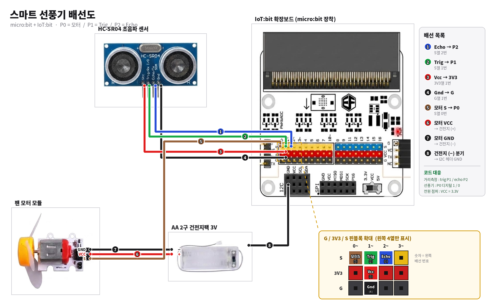
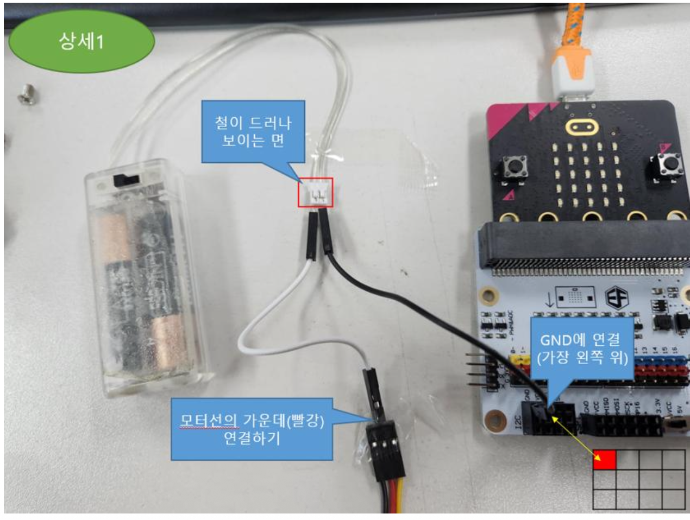
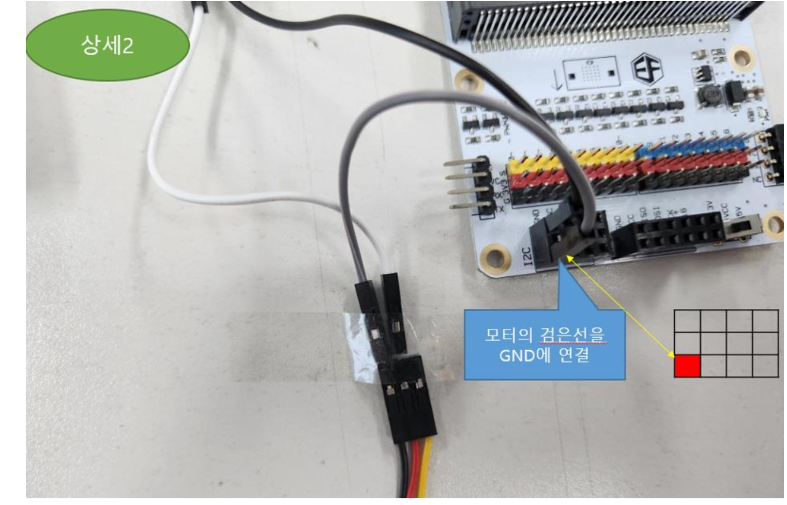
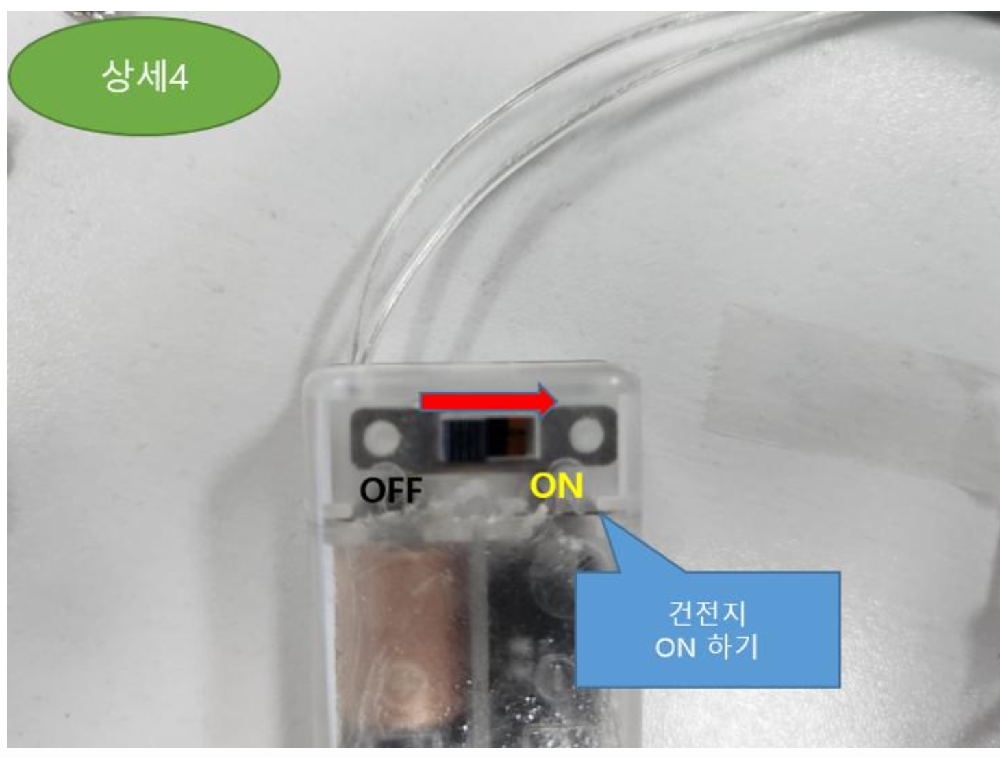
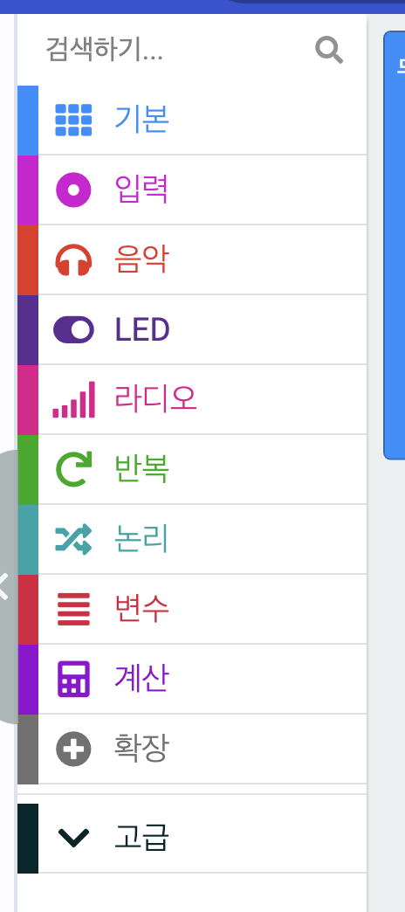
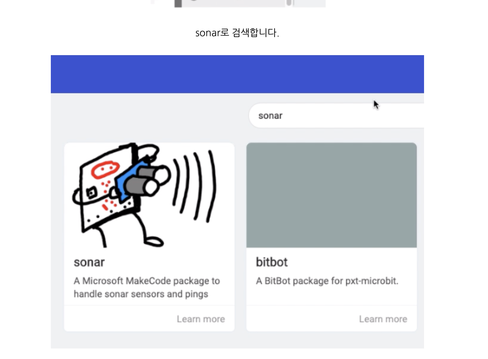
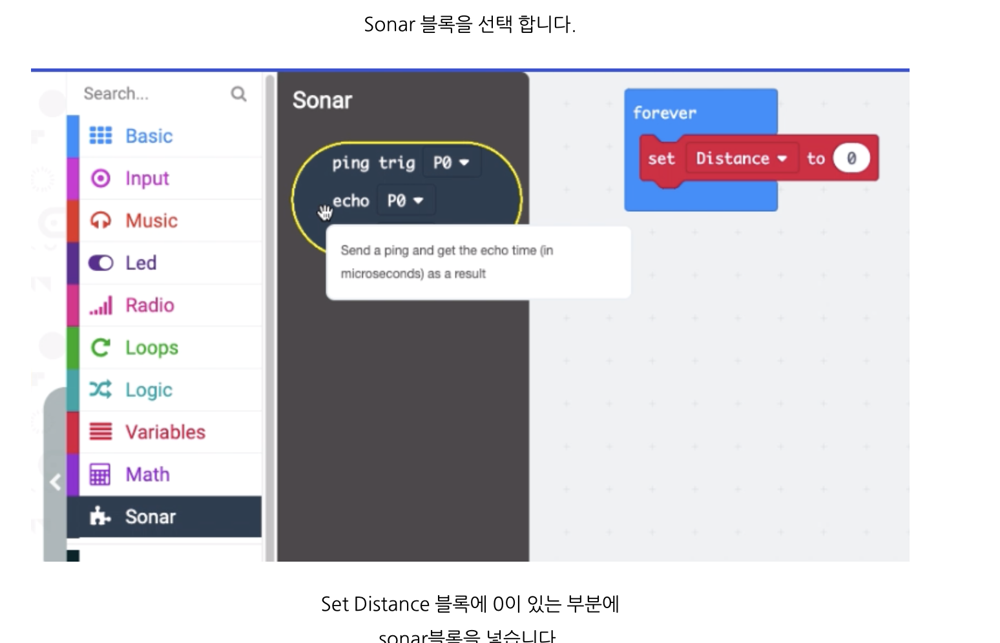
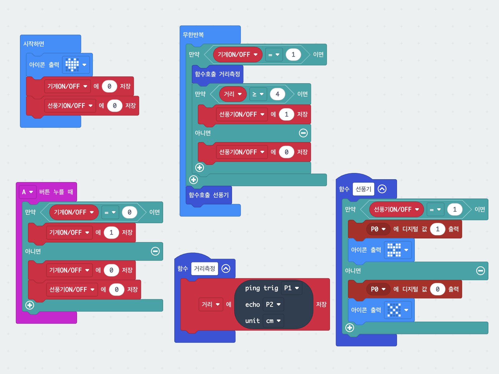

6. 스마트 선풍기
초음파 센서로 앞쪽 거리를 계속 재다가, 손이 4cm보다 가까이 오면 스스로 멈추는 선풍기입니다. 거리를 재는 일과 모터를 돌리는 일을 각각 함수로 나눠 두어, 무한반복 안은 "재고 → 판단하고 → 돌린다"만 남긴 것이 핵심입니다.
준비물
- micro:bit 본체
- IoT:bit 확장보드
- HC-SR04 초음파 센서
- 팬 모터 모듈
- AA 2구 건전지팩 (3V)
- 점퍼선
핀 배치
| P0 | 모터 (S) |
|---|---|
| P1 | 초음파 Trig |
| P2 | 초음파 Echo |
배선도
그림을 클릭하면 크게 볼 수 있어요. 원본이 커서 확대 화면 안에서 스크롤됩니다.

연결할 때 주의할 점
사진을 클릭하면 크게 볼 수 있어요.



먼저 할 일 — 초음파 센서 블록 추가하기
거리를 재는 ping trig / echo 블록은 MakeCode에 처음부터 들어 있지 않습니다. sonar 확장을 한 번 추가해야 블록 목록에 나타납니다. 아래 순서대로 하면 됩니다. (프로젝트마다 한 번씩 해 주어야 합니다.)
그림을 클릭하면 크게 볼 수 있어요.



여기서 꼭 바꿀 것
꺼낸 블록은 처음에 trig P0 · echo P0으로 되어 있습니다. 우리 선풍기는 trig를 P1, echo를 P2로 씁니다. 드롭다운을 눌러 반드시 바꿔 주세요. 그대로 두면 거리가 0으로만 나옵니다.
블록 코드
그림을 클릭하면 크게 볼 수 있어요.

사용법
| A 버튼 | 전원을 켜고 끕니다 (누를 때마다 바뀜) |
|---|---|
| 손이 멀리 있을 때 | 4cm 이상이면 날개가 돕니다 |
| 손을 가까이 | 4cm보다 가까우면 즉시 멈춥니다 |
전원이 꺼져 있으면 손을 대도 아무 반응이 없습니다. 먼저 A를 눌러 켜세요.
막힐 때
날개가 전혀 안 돌아요.
① 건전지팩 스위치가 ON인지, ② 모터의 검은 선이 확장보드 GND에
꽂혀 있는지 확인하세요. 이 두 가지가 가장 흔한 원인입니다.
거리가 이상하게 나와요.
Trig는 P1, Echo는 P2입니다. 두 선이 바뀌면 거리가 0이거나 엉뚱한 값이 됩니다.
손을 안 댔는데 멈춰요.
센서 앞에 책·필통 같은 것이 있는지 보세요. 센서는 앞쪽에 있는 것이면 무엇이든 잽니다.
계속 돌기만 하고 안 멈춰요.
센서가 벽이나 천장을 향하고 있으면 거리가 늘 멀게 나옵니다. 센서를 앞쪽으로 돌려 주세요.